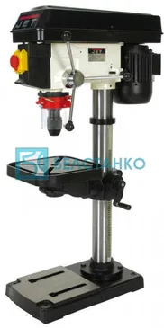
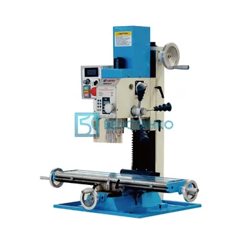
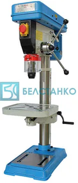
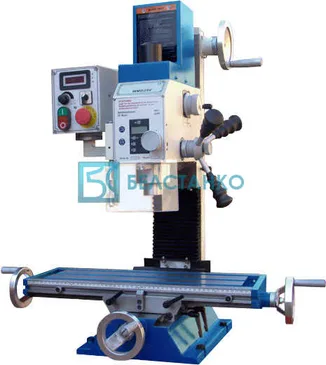
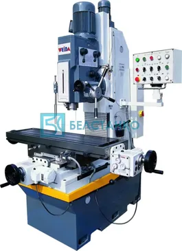
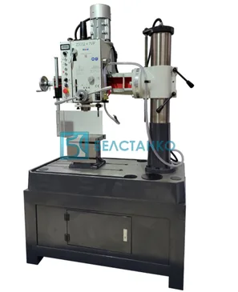
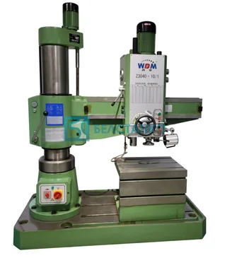
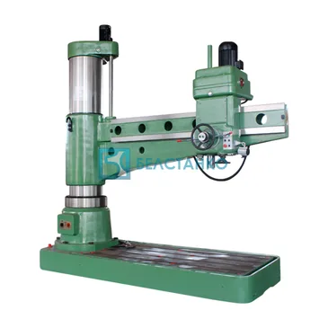
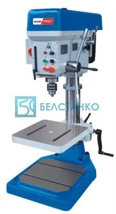
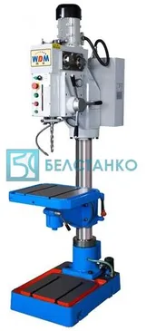

Позиций в разделе: 69

JDP-10M
Сверлильный станок
29 500 ₽
JDP-13M
Сверлильный станок
Цена по запросу
JDP-15
Сверлильный станок
57 000 ₽
JMD-15
Станок фрезерно-сверлильный
190 000 ₽
JMD-45PFD
Станок фрезерно-сверлильный
410 000 ₽
SRB50
Радиально-сверлильный станок
Цена по запросу
VM18L
Сверлильно-фрезерный станок
169 800 ₽
VM25L
Сверлильно-фрезерный станок
205 000 ₽
VM32L
Сверлильно-фрезерный станок
276 000 ₽

WD20
Настольный сверлильный станок
Цена по запросу



XZ5150
Станок сверлильно-фрезерный
1 956 000 ₽

Z3040х10/1
Радиально-сверлильный станок
1 620 000 ₽
Z3063х20
Радиально-сверлильный станок
4 050 000 ₽
Z3080х25
Радиально-сверлильный станок
5 250 000 ₽
Z4132G
Настольно-сверлильный станок
190 000 ₽
Z5035
Вертикально-сверлильный станок
660 000 ₽
Z5040
Вертикально-сверлильный станок
714 000 ₽
Z5050
Вертикально-сверлильный станок
828 000 ₽